Nyzo version 540 (commit on GitHub) improves sentinel monitoring and performance.
This version affects the sentinel primarily. It also includes a logging option that can be activated for all run modes.
In Sentinel, a timestamp and constant have been added to ensure a minimum interval between blocks transmitted by this sentinel. This is a general safeguard to prevent a number of current or future situations where the sentinel might get into a state that would cause it to transmit a block on every iteration of its task loop. This type of safeguard — sensible, easy to understand, and protective against a variety of situations — can go a long way to promoting stability and graceful handling of exceptional circumstances in a system.
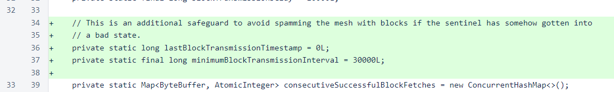The boolean variable blockTransmittedForManagedVerifier has been replaced with lastBlockTransmissionHeight. The new variable entirely replaces the function of the old variable — determining whether a block has been transmitted for the height currently being processed — and it also provides feedback to the user about when the sentinel last sent a block to try to protect a verifier.
This variable is persisted using the PersistentData class to provide proper feedback to the user through sentinel restarts.
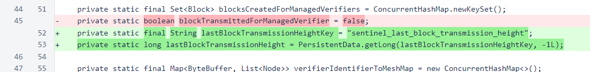In the condition controlling entry into the section of code where blocks are created, consideration of calculatingValidChainScores has been added. When a sentinel is working to build enough of a history to properly score blocks, new blocks will be created at every height. This results in additional work for the sentinel for this period, but it allows the operator of the sentinel to know as soon as the sentinel is capable of protecting its managed verifiers.
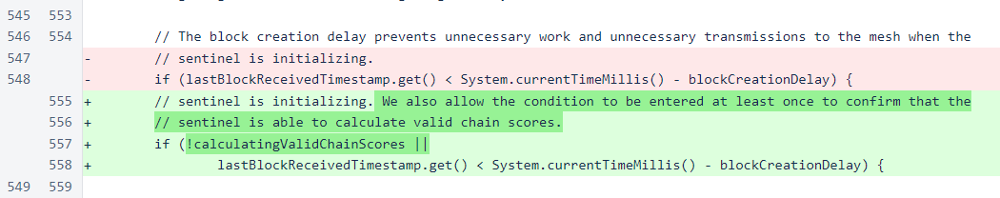Before, the blockTransmittedForManagedVerifier flag had to be reset when blocks were cleared at a new height. The replacement, lastBlockTransmissionHeight, does not require an analogous reset.
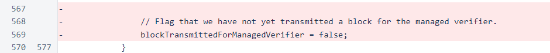The inner condition now checks the lastBlockTransmissionHeight against heightToProcess to determine whether continuation is justified.
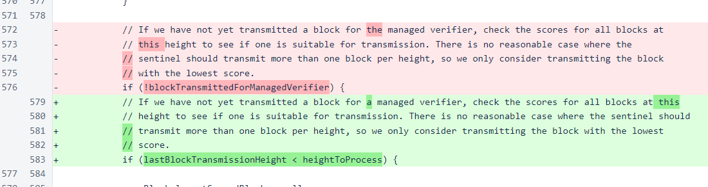The logic for determining which block to transmit has changed from requiring a non-null block to requiring a valid chain score. Before, transmissions would occur frequently when invalid scores were calculated. This would expose a sentinel to potential attacks while providing no real benefit to the managed verifiers. Now, the sentinel does not transmit any blocks until it can calculate valid chain scores.
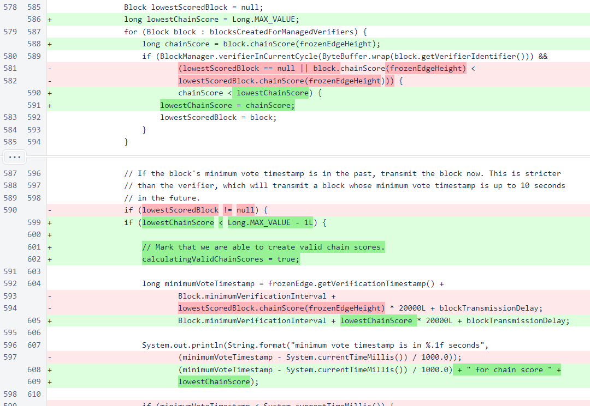The minimumBlockTransmissionInterval is now enforced, and the lastBlockTransmissionTimestamp is now stored to allow this enforcement. The lastBlockTransmissionHeight is stored and persisted, and a yellow background has been added to the print statement.
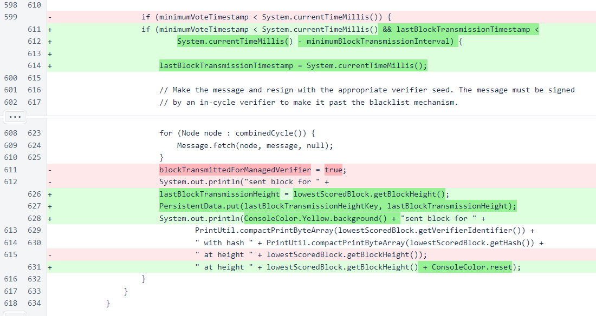The sentinel transaction is now omitted unless the sentinel is certain that it is a valid transaction that will not cause the block to be rejected by the cycle.
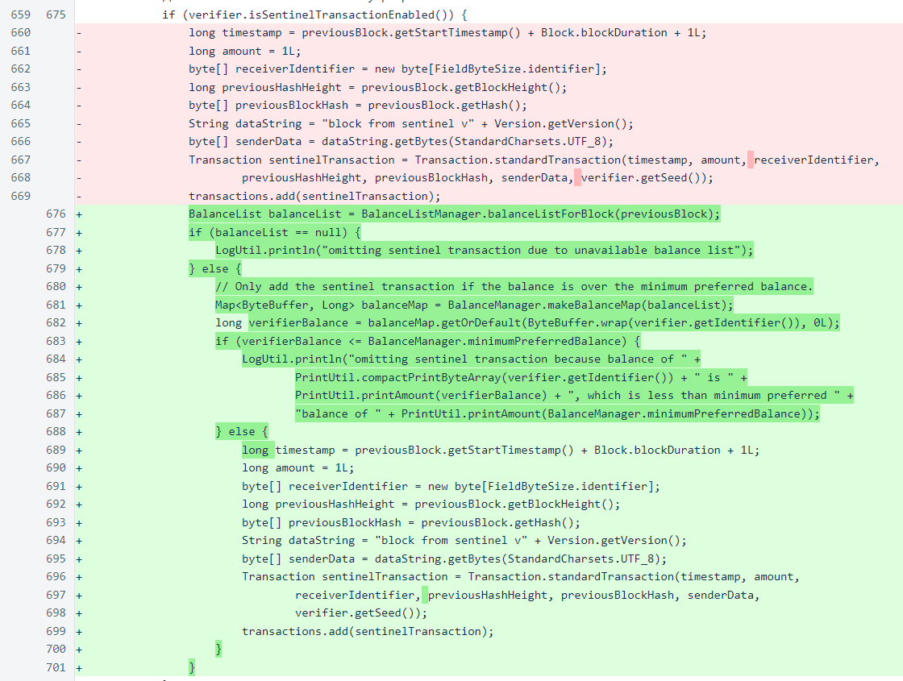Accessor methods expose the values of calculatingValidChainScores and lastBlockTransmissionHeight for use in the web interface.
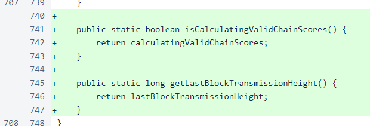A preference has been added to LogUtil to add timestamps to all logging statements made with the LogUtil class. This will not yet add timestamps to most logging statements, as use of System.out.println() is currently much more common than LogUtil.println() in the Nyzo codebase.
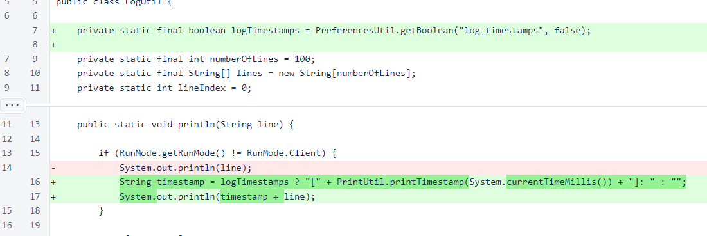In SentinelController, the version has been moved to the div that automatically refreshes. This causes the new version to display automatically if a sentinel page is open during an upgrade.
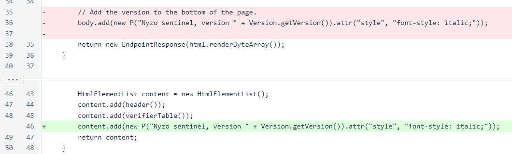On this upgrade, this may cause an odd display of two versions at the same time. If this happens, refresh the page. This will not happen in future updates.
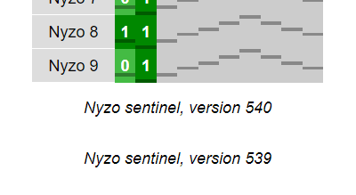The frozen-edge height is now obtained from the frozen-edge block instead of through a separate call to the BlockManager class. This does not change the output or efficiency of the code. It is simply a better choice. The frozen-edge block is already referenced several other times in this area of code, so bringing in a different reference for the frozen edge adds unnecessary (though small) conceptual complexity to the code.
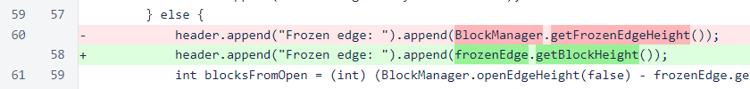The cycle length, last transmission height, and protection status are now displayed. The meaning of the protection status is explained in the comments.
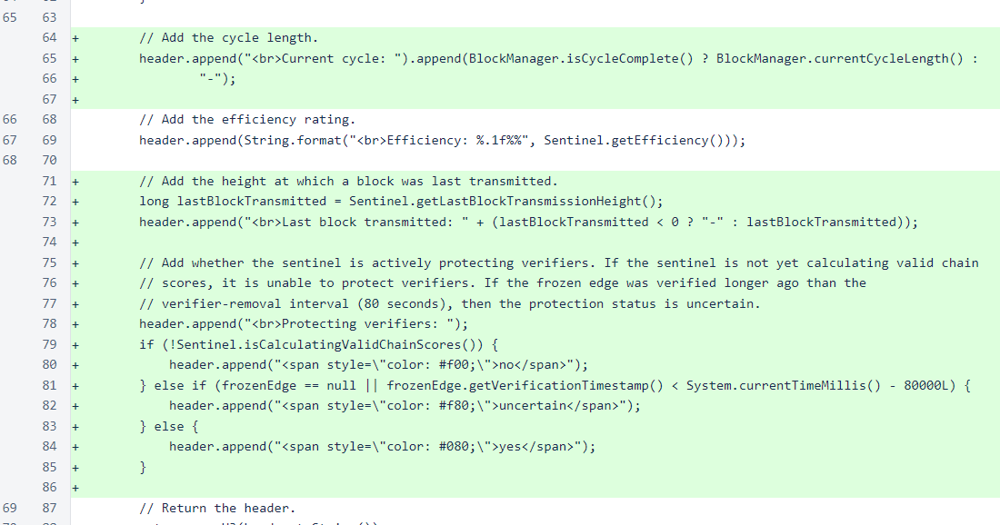The table in the web UI has been restructured slightly, and styles changed slightly, to improve display in Internet Explorer. Specifically, Internet Explorer did not understand the color #0005, and it collapsed the rows of the table onto one another due to use of the table-caption display property in verifier-tile-container.
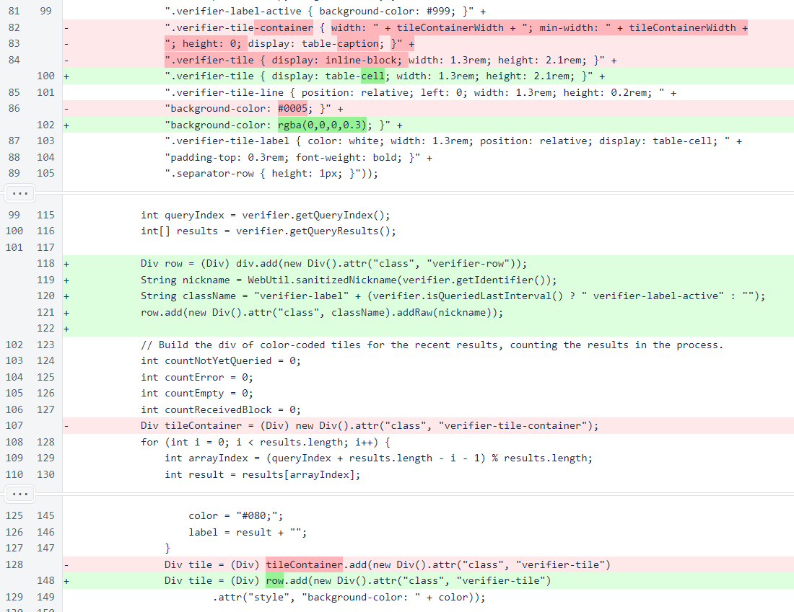